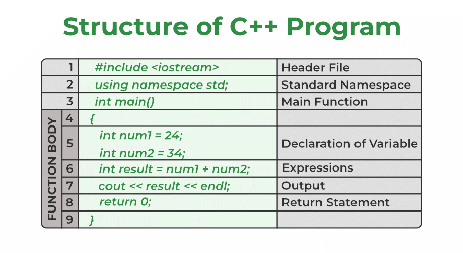

C++ គឺជាភាសាកូដរបស់ភាសាធិសត៌ម្នគឺ C ។ វាបង្កើតឡើងដោយគោរពបន្ថែមដូចគ្នានូវសញ្ញាខាងក្រោមនេះ៖ ភាសាខាងក្រោម (Syntax): C++ ស្រួលប្រើនូវភាសាខាងក្រោមដោយគោរពអង់តែបី៖ C, C++, និង C#។ វាក្រិតឡើងនិងមានទំហំមូលបីក្នុងនាទីបច្ចុប្បន្ន។ សម្រាប់គ្រប់ភាសា: C++ បញ្ហាល្អសម្រាប់ការសរសេរកូដសម្រាប់ប្រព័ន្ធបើមានសម្រាប់កម្មវិធីដែលក៏ប្រើប្រាស់នៅក្នុងបណ្ដាញ, អ៊ីញឺបង្កើតគេហទំព័រ, បង្ហាញការរៀបចំបញ្ហាគ្រប់ប្រព័ន្ធ។ ការរៀបចំបញ្ហា (Object-Oriented Programming): C++ ជាភាសាកូដដែលបង្កើតឡើងដោយមានប្រយោជន៍នូវមុខងារគ្រប់គ្រង (OOP)។ វាប្រើការកំណត់ប្រភេទតួនាទីនិងវិបត្តិក្នុងការគ្រប់គ្រងកម្មវិធី។ ការជ្រើសរើសអាប់ឡាន (Memory Management): C++ បន្ថែមគុណតួនាទីដែលអាចចូលចិត្តដល់សំណុំទំនាក់ទំនងបរិវិបត្តិអតិថិជន។ នេះធ្វើអោយអ្នកប្រើប្រាស់បានរឹតបរិវិបត្តិភាពល្អ។ ការប្រើម៉ូឌែល (Templates): C++ មានក្រុមចំនួននៃគុណតួនាទីដែលជួបប្រើប្រាស់បញ្ហា។ ដែលប្រភេទនៃប្រភេទតួនាទីអាចត្រូវបានកំណត់ដោយការប្រើម៉ូឌែលដើម្បីកំណត់ប្រភេទនៃគុណតួនាទី។ C++ ត្រូវបានប្រើជាភាសាកូដសំខាន់ចំណែកនិងដែលបានសរសេរឡើងក្នុងការអភិវឌ្ឍអំពីការគិតជាលាស់លេងក្នុងវិធីសាស្ត្របច្ចេកទេសនិងបច្ចេកទេសពាក់ព័
C++ ជាភាសាកូដនៃកម្មវិធីជាមួយនឹងអក្សរគឺបង្កើតឡើងដោយ Bjarne Stroustrup នៅឆ្នាំ 1979។ វាជាមូលដ្ឋានដែលបង្កើតឡើងពីភាសាភាគតិចជាងពីគេហៅថា "C with Classes"។ ព័ត៌មានខាងក្រោមនេះបង្ហាញអំពីសម្គាល់សំគាល់និង syntax សំខាន់នៃ C++:
#include iostream
using namespace std;
using namespace std;
#include
int main() {
int x; // បង្កើតអញ្ជើញ x ដោយប្រើគ្រាប់ជាម៉ូឌែល
double y = 3.14; // បង្កើតនិងព្យាយាមផ្សារតាង y
ដោយតម្លៃ 3.14
return 0;
}
ភាសា C++ វាជាប្រភពសំខាន់ដែលប្រើសម្រាប់រៀនអំពីទិន្នន័យដែលអាចប្រើប្រាស់នៅក្នុងកម្មវិធីផ្សេងៗ។ ក្នុង C++ ទិន្នន័យត្រូវបានបង្កើតដោយប្រើអញ្ញាតិដែលត្រូវបានកំណត់ទៅតាមប្រភពផ្សេងៗ។ ប្រភពទាំងនោះជាមួយនឹងប្រភពស្មុគ្រស់ឬប្រភពទូទៅ។ ក្នុងករណីនេះអ្នកអាចប្រើអញ្ញាតិប៉ុន្មានដោយសារធំបំផុតដែលត្រូវបានបញ្ជូនទៅអ្នកកម្មវិធីដើម្បីប្រើ។ ឧទាហរណ៍នៃអញ្ញាតិទីបីជានិច្ចត្រឹមត្រូវក៏មានលំនាំបន្ថែមដូចជា int, float, double, char ជាដើម។ បើសិនអ្នកចង់បង្កើតអញ្ញាតិ int ប៉ុន្មានដោយចៃដន្យឬគេហទំព័រ។
int myVariable = 10;
នៅទីនេះ myVariable ជាឈ្មោះនៃអញ្ញាតិ int និងត្រូវបានកំណត់តាមតំបន់ទំព័រ។ ត្រូវសរសេរអញ្ញាតិនេះនិងតម្លៃដែលត្រូវកំណត់ទៅប្រភព។ ប្រសិនបើអ្នកចង់បង្កើតអញ្ញាតិ char ប៉ុន្មានដោយចៃដន្យឬអញ្ញាតិ float ឬ double ទៀត អ្នកគ្រប់គ្រងបានទៅតាមតម្លៃនៃអញ្ញាតិទៅ។
char myChar = 'A'; float myFloat = 3.14; double myDouble = 2.71828;
char myChar = 'A';
float myFloat = 3.14;
double myDouble = 2.71828;

ក្នុង C++, បណ្តាញបង្កើតកូដប្រើជាមួយនឹងកម្មវិធីគឺមានប្រភេទច្រើននៃបញ្ជូនគូរ៉ាមដែលអាចធ្វើប្រើបាននៅក្នុងកូដដោយរក្សាទុកនិងបញ្ជាក់បញ្ជូនទិន្នន័យ។ Operators ជាអ្វីគឺជា មុខងារឬអក្សរសញ្ញានៃភាសាកូដដែលត្រូវបានប្រើដើម្បីធ្វើបច្ចុប្បន្នភាពនិងសញ្ញាបន្ថែម។ នៅខាងក្រោមនេះជាឧទាហរណ៍របស់កូដអ្នក:
int x = 10;
បញ្ជូនទិន្នន័យដោយប្រើផលគុណ (*, /, %): ប្រើដើម្បីគុណបន្ទាប់រវាងអថេរឬអញ្ញាពីគ្នាដូចជា គុណ (*), ចែក (/), និងសំបក (%)។
int result = 15 * 2; // គុណ int quotient = 20 / 4; // ចែក int remainder = 10 % 3; // សំបក
បញ្ជូនទិន្នន័យដោយប្រើលក្ខណៈផ្ទាល់ (+, -): ប្រើដើម្បីបង្កើតឬបង្កើនតម្លៃនិងដកតម្លៃពីគ្នាដូចជា បន្ថយ (+) និងដក (-)។
int sum = 5 + 3; // បន្ថយ int difference = 8 - 4; // ដក
ប្រើដើម្បីប្រៀបធៀប (==, !=, <,>, <=,>=): ប្រើដើម្បីពិនិត្យលទ្ធផលនៃកូដនិងបន្ថែមលើតម្លៃរវាងអថេរឬអញ្ញាពីគ្នាដូចជា ស្មើ (==), មិនស្មើ (!=), តិចជាង (<), ធំជាង (>), តិចជាងឬស្មើ (<=), ធំជាងឬស្មើ (>=)។
bool isEqual = (x == y);
// ពិនិត្យលទ្ធផលដូចគ្នា
bool isNotEqual = (a != b);
// ពិនិត្យលទ្ធផលមិនដូចគ្នា
ក្នុងភាសា C++, កំណត់តម្លៃសំណុំពិសេសនៃកូដគឺជាអនុវត្តន៍ដោយមានការប្រើប្រាស់តម្លៃសំណុំជាច្រើន។ សន្មតថាកូដនឹងនិងរហ័សនៅពេលដែលអ្នកសរសេរអ្វីមួយដែលទាក់ទងនឹងកូដរបស់អ្នក។ នៅទីនេះសូមមើលឧទាហរណ៍នៃកំណត់តម្លៃសំណុំនៅក្នុងភាសា C++: សេចក្ដីអនុវត្ត (//): សេចក្ដីអនុវត្តត្រូវបានបញ្ចូលក្នុងតំបន់នៃសេចក្ដីពាក់ព័ន្ធតាមកូដដែលអ្នកចង់ធ្វើការពន្យល់។ កូដដែលស្ថិតនៅក្នុងសេចក្ដីអនុវត្តត្រូវបញ្ចូលលើបន្ថែម។
// នេះជា សេចក្ដីអនុវត្ត ក្នុង C++
int x = 5;
// បែងចែកលទ្ធផលទីផ្សារទីមួយដោយ 5
Switch ប្រើដើម្បីធ្វើប្រភេទក្នុងកូដដោយផ្ទាល់ប្រើពាក្យ switch នៅក្នុងភាសាកូដ C++។ ស្ដាប់ switch ប្រើសញ្ញារវាងតម្លៃនៃអថេរឬអញ្ញានីមួយៗជាដំណើរការជាតិនៃតម្លៃនោះ។ ឧទាហរណ៍ខាងក្រោមបង្ហាញពាក្យ switch ដែលប្រើដើម្បីលើកយកដំណើរការតាមតម្លៃនៃអថេរ day:
#include iostream
int main() {